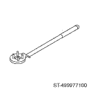
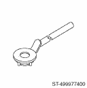
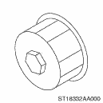
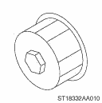
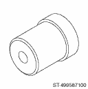

LUBRICATION(H4SO) > General Description
|
ILLUSTRATION |
TOOL NUMBER |
DESCRIPTION |
REMARKS |
|
 |
499977100 |
CRANK PULLEY WRENCH |
Used for stopping rotation of crank pulley when loosening and tightening the crank pulley bolt. (2.5 L model) |
|
 |
499977400 |
CRANK PULLEY WRENCH |
Used for stopping rotation of crank pulley when loosening and tightening the crank pulley bolt. (2.0 L model) |
|
 |
18332AA000 |
OIL FILTER WRENCH |
Used for removing and installing oil filter. (Outer diameter: 68 mm (2.68 in)) |
|
 |
18332AA010 |
OIL FILTER WRENCH |
Used for removing and installing oil filter. (Outer diameter: 65 mm (2.56 in)) |
|
 |
499587100 |
OIL SEAL INSTALLER |
Used for installing oil seal into oil pump. |